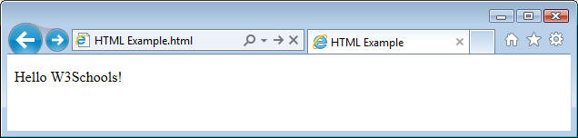

From http://www.w3schools.com (Copyright Refsnes Data)
HTML is the primary language for building/creating web pages.
HTML is an easy-to-learn markup language.
HTML uses markup tags inside angle brackets like <p>), to define the elements of a web page:
HTML Example
Try it yourself » Click on the "Try it yourself" button to see how it works |
HTML uses start tags and end tags to markup web page elements: In the example above, the <p> tag marks the start of a paragraph, and </p> marks the end of the paragraph.
By using simple HTML tags, web designers can add headers, paragraphs, text, tables, images, lists, programming code, etc, to a web page (HTML document).
Web browsers (IE, Firefox, Chrome, etc) read HTML documents, interpret the HTML tags, and display the proper output (without displaying the HTML tags):

According to the HTML standard, HTML should be used to define the content of web pages.
To define the visual style (color, size, appearance, layout, etc), CSS (Cascading Style Sheets) should be used (see next chapter).
W3Schools' complete HTML tutorial teaches you everything you need to know about HTML.
HTML is easy to learn - You will enjoy it.
Study our Complete HTML Tutorial
Study our Complete HTML Reference
From http://www.w3schools.com (Copyright Refsnes Data)